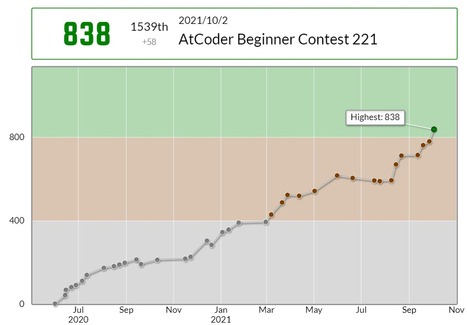

先日、累計38回目のコンテストでやっと緑色になる事ができました！
折角の節目なので、緑になるまでにどのような勉強をしたかについてまとめておこうと思います。いわゆる色変記事というやつです。
もくじ
灰→茶になるまでにやったこと茶→緑になるまでにやったこと
これからの目標について
灰→茶になるまでにやったこと
初めてAtCoderのコンテストに出たのは2020/5/31に開催されたAtCoder Beginner Contest 169でした。
2020年の5月といえば新型コロナウイルスがいよいよマズイ段階になってきていて、 45年ぶりに(第一回)緊急事態宣言が発出されていたとかそういう時期です。
そのころ僕は高校1年生だったのですが、このコロナウイルスの影響でまだ1度も高校に行ったことがなく、中学は2月で殆どの日程が終わっていたため実質的に春休みが3ヵ月間続いているような状態でした。
この頃僕はアホみたいに暇で(中学卒業のタイミングだったので課題なども一切なかった)、なにか暇つぶしになることないかな～～～と思っていたところに以前から興味のあったプログラミングを折角ならやってみようかなという気になり、適当に入門書を買ってプログラミングの勉強を始めました。
初めて読んだ本はこれだったと思います。知識0でもめちゃくちゃ分かりやすくてサクサク読み進められました。あ、ステマじゃないです。
その後入門書を追加で何冊か読んだりインターネットで調べたりしている中で、「AtCoder」というものを知りました。
そのためAtCoderをやり始めた頃は競プロどころかプログラミング自体がまだ始めたてだったので、まずコーディングに慣れるというのが最初の目標でした。
最初の頃はコンテストの時は必ずJava(昔はJavaで競プロをしていた)のリファレンスや、読み終わった入門書をチラチラ見ながらコーディングしていました。それでもREやCEをよく出していました。
(最初に参加したコンテストの提出)

その後、コンテストに参加していく中で「C++の方がどうやら競プロに向いているらしい」ということを知り、C++を勉強しました。下図の丸部分が使用言語をC++にしてからのレートの変化です。
使用言語をC++に変えたらレート爆増！！！とまでは行きませんが、C++にしてからは多少レートの伸びが良くなったと思います。
個人的には、当然C++のコーディングに慣れるのにも時間がかかったため、中々すぐにC++に変えたことによる恩恵が出てくる訳ではなかったという事だと思います。(それに加え2完くらいなら計算量はあまり関係ないため)
C++のコーディングになれてきたら、やっと典型アルゴリズムについて勉強を始めました。
茶色になるまでに学んだアルゴリズムはこんな感じです。
- DP
しかし、学んだアルゴリズムを使う問題がすぐに解けるようになったという訳ではなかったです。むしろ解けない事のほうが遥かに多かったです。
ですが、段々と解答の言っていることが分かるようになり、ただ問題文の通りに愚直に実装すればいい問題だけしか解けなかったのが、少し問題文を言い換えたり、簡単な典型アルゴリズムを用いる問題がちょくちょく解けるようになっていきました。
そんなこんなで2021/3/6のAtcoder Beginner Contest 194、通算23回目のコンテストで茶色になることが出来ました。